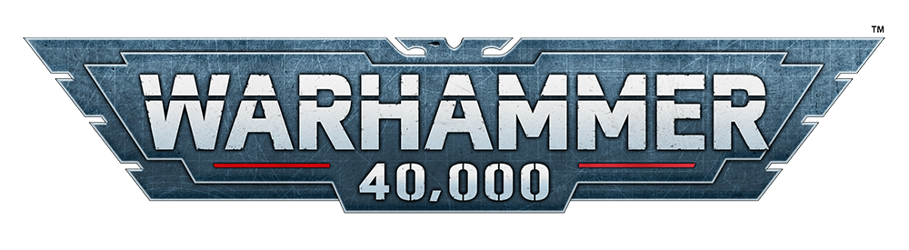
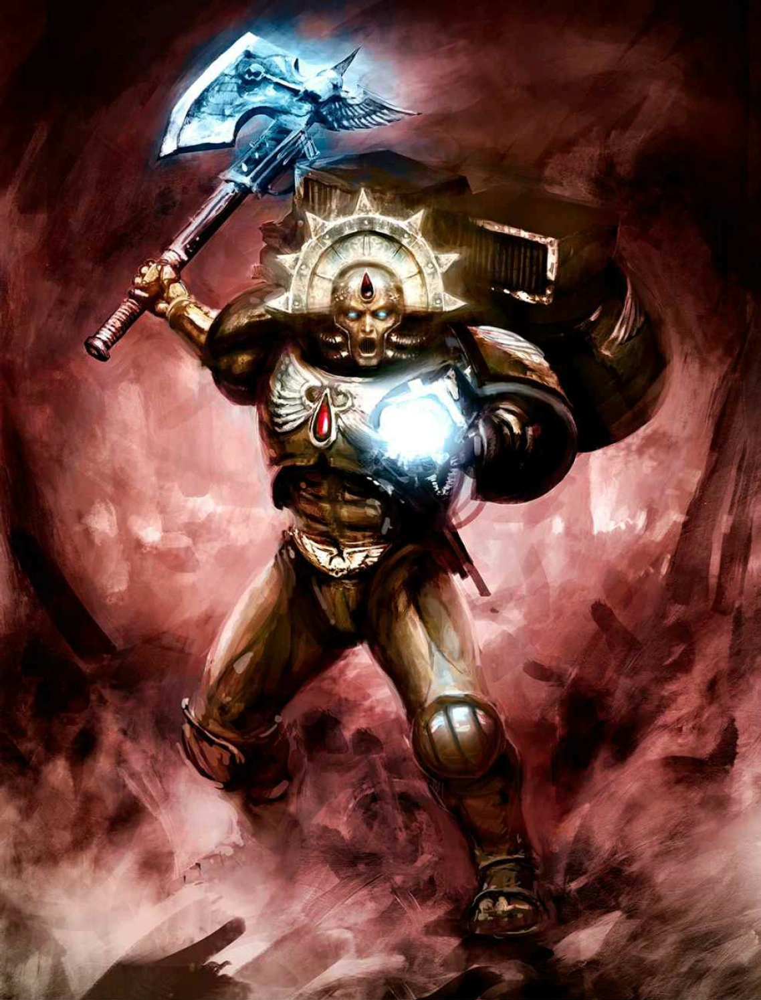
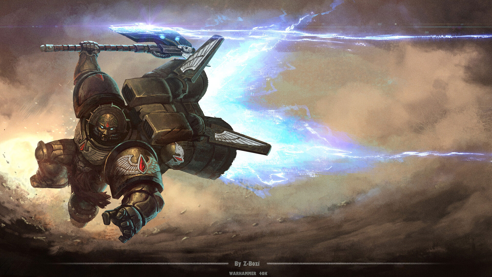

Dante was born a weak child with little to no nutation his planet was eradated and falling apart so he decided to become a blood angle on their home world of baal. He complated the trails with avarage and unremarable scores. He was noted for being mercyful.
Dante was stedfast capble and strong for a marine who always proved himself after a massive fight he was pormoated to chapter master due to over 80% of his team dyeing he jump packs into the heart of battle, bashing scarbrand at the gates of pandamodem and stop ork WARGS! Hes been leading his blood angles to vicotry for thounds of years.
(Dantai Speech at the devestation of baal)
During the Second War for Armageddon the Blood Angels rallied the defenders of the besieged hive cities Acheron and Tartarus, and Dante's leadership was instrumental in devastating the Greenskin hordes sweeping across the planet's principal landmass.
In the Devastation of Baal Dantai fought aginst biggest thereat the universe has seen in a while the tyrinid felat hive fleat lyvathen, and while in the midst of the battle where the blood angles loss thounds by the second but he was also attacked and then aided by the forces of choast, and even died at the end but his father sanqunuis was able to bring him back and giv ehim another chance at life.
